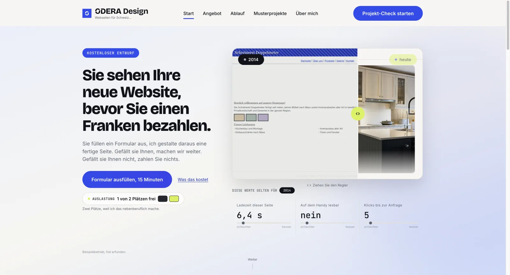
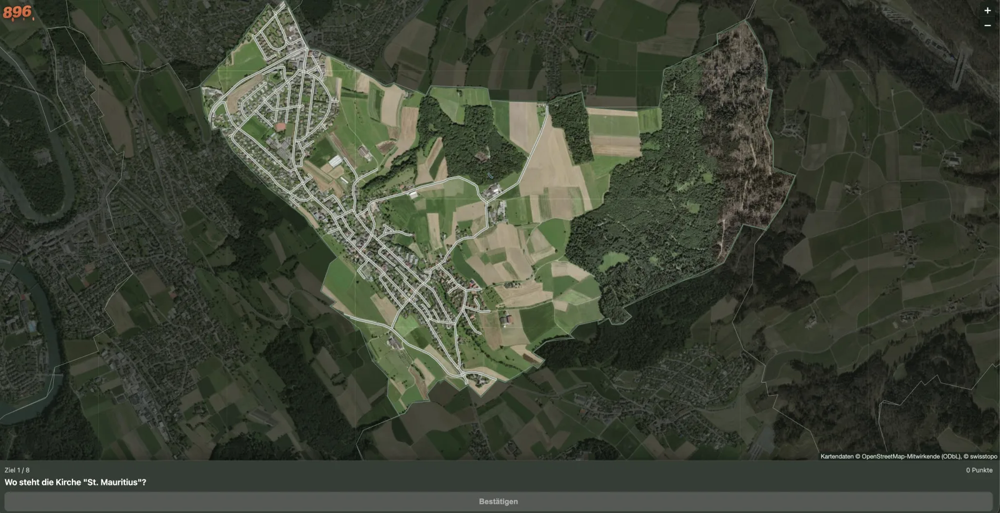
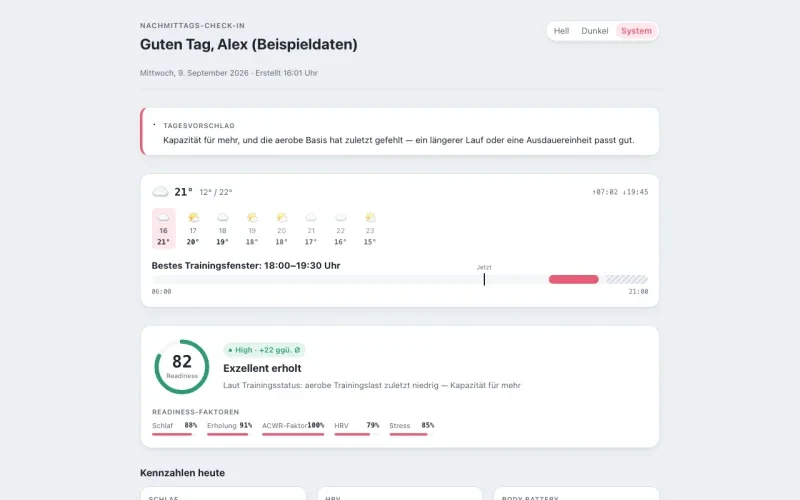

ODERA Design
Websites für kleine Unternehmen.
Mein eigenes Angebot: Ich gestalte und baue Websites für Schweizer Betriebe. Der erste Entwurf ist kostenlos, Anfragen laufen über odera.ch.
- Rolle
- Konzept, Gestaltung, Umsetzung und Betrieb.
Ich baue Websites für kleine Unternehmen und eigene Web-Apps. Hauptberuflich arbeite ich im technischen Vertrieb für Data & AI und studiere berufsbegleitend Digital Business & AI an der HWZ Zürich.

Websites für kleine Unternehmen.
Mein eigenes Angebot: Ich gestalte und baue Websites für Schweizer Betriebe. Der erste Entwurf ist kostenlos, Anfragen laufen über odera.ch.

Orte auf der Karte schätzen.
Technik: Vite, TypeScript, Leaflet, OpenStreetMap, swisstopo, GitHub Actions und Pages

Daten der Sportuhr im eigenen Überblick.
Technik: MCP, Python, SQLite, Jinja2, Playwright
In Arbeit: eine Prognose-App.
2021 habe ich als Lernender im IT-Support angefangen: Level 1 und 2, Geräte einrichten und migrieren, jede Woche eine Kurzpräsentation im Team. Danach Technical Support direkt beim Kunden, später Deployment interner Anwendungen mit Red Hat OpenShift und IBM Cloud sowie Web-Entwicklung mit React.
Heute arbeite ich im technischen Vertrieb für Data & AI: Anforderungen klären, Angebote erarbeiten, technische Konzepte schreiben. Seit September 2026 studiere ich berufsbegleitend Digital Business & AI an der HWZ Zürich.
Daneben baue ich Websites und eigene Anwendungen mit aktuellen KI-Werkzeugen. Wer Support gemacht hat, baut Seiten, die man auch in zwei Jahren noch pflegen kann.
seit 07/2025
IBM Schweiz AG
01/2024 bis 07/2025
IBM Schweiz AG
11/2022 bis 12/2023
IBM Schweiz AG
08/2021 bis 11/2022
IBM Forschungslabor Zürich
seit 09/2026
HWZ Hochschule für Wirtschaft Zürich, berufsbegleitend
2021 bis 2025
Technische Berufsschule Zürich
2021 bis 2025
Berufsmaturitätsschule Zürich
HTML, CSS, JavaScript, TypeScript, React, Vite, Tailwind
Red Hat OpenShift, IBM Cloud, Docker, GitHub Actions
Python, SQLite, Supabase, MCP, KI-Werkzeuge
Anforderungsanalyse, Angebote und RFPs, technische Konzepte
Level 1 und 2, Geräte-Management für Mac und Windows, Ticketing
Deutsch (Muttersprache), Englisch (fliessend), Französisch (gut)
Am schnellsten erreichen Sie mich per E-Mail.
Sie brauchen eine Website für Ihr Unternehmen? Anfragen bitte direkt über odera.ch.